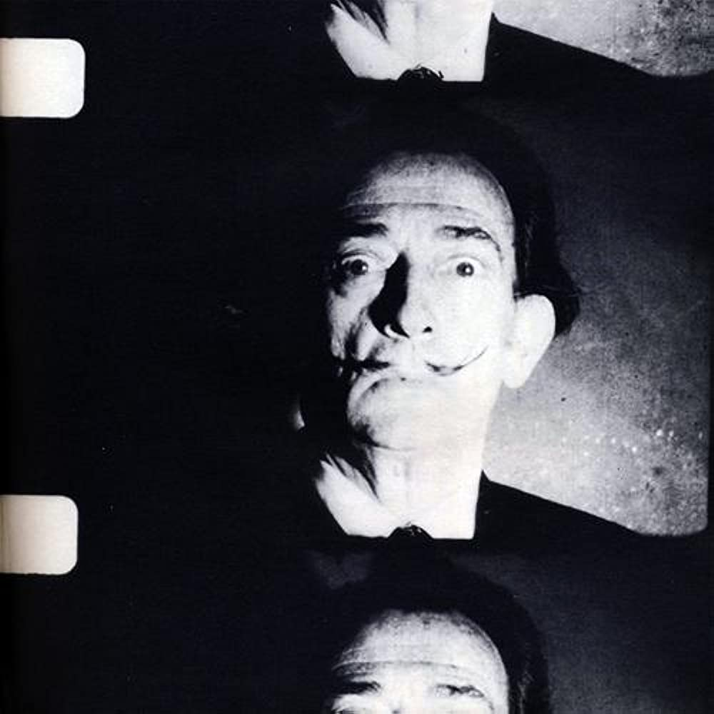
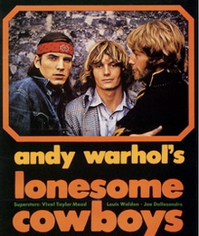
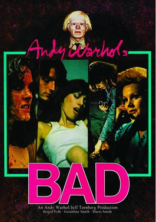

The reunion of two art geniuses: the Pop Art master Andy Warhol directs the master of Surrealism Salvador Dalí in this short film where the Spanish artist pays a visit to The Factory where he gets the chance to meet rock group The Velvet Underground.
Five lonesome cowboys get all hot & bothered at home en the range after confronting Ramona Alvarez and her nurse.


Hazel makes extra money by providing ruthless women to do hit jobs. K.T. is a parasite, and contacts Hazel looking for work. She decides to try him on a trial basis. Meanwhile, the local cop she pays off wants an arrest to make it look like he's actually doing his job, but she doesn't want to sacrifice any of her "associates." Several other side plots are woven in, populated with characters from the sleazy side of life.
| film | cast | year |
|---|---|---|
| sleep | John Giorno | 1963 |
| Phillip and Gerard | Phillip Fagan, Gerard Malanga | 1964 |
| sunset | Nico | 1967 |
| San Diego Surf | Eric Emerson, Taylor Mead | 1968 |
| Andy warhol's Bad | Carroll Baker, Perry King, Susan Tyrrell | 1977 |